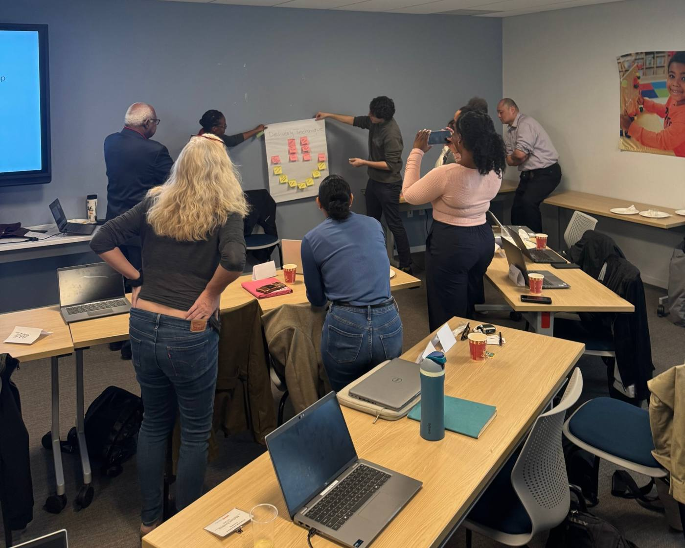
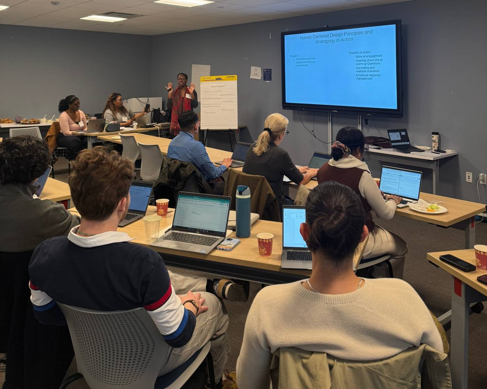

NYC Department of Consumer and Worker Protection, Office of Financial Empowerment
Financial Literacy for Youth Initiative
Curriculum Specialist (College Aide), 2025–2026
A year ago, this curriculum didn't exist. Three vendors were drafting it in parallel for middle schoolers, high schoolers and parents, with a new state requirement on the way. I reviewed every lesson plan across all three curricula, designed the educator training, mapped the curriculum to New York's new personal finance requirement, and rebuilt how learning is measured.
1,000+review comments across three rounds of revision
15school districts in the pilot
56state objectives mapped, line by line
49→28survey items, rebuilt to measure learning
Program
Brings financial education into NYC public schools: Financial Educators in classrooms plus in-school banking, piloted in 15 school districts
Worked with
Three curriculum vendors, training partners, Financial Educators, the DCWP program team
Jump$tart Standards, NYS Next Gen Standards, CFPB Building Blocks and youth pedagogy, UDL, trauma-informed design
The year at a glance
Several lines of work ran in parallel: reviewing vendor drafts, testing lessons in classrooms, training educators, and aligning and measuring the curriculum against the state's new requirement.
1 of 5Judge: a rubric that turned opinions into evidence
My part: I built the review rubric and led line-level review of the middle school, high school and parent curricula (lesson plans, facilitator guides, student workbooks, slides and curriculum maps) through three rounds of revision, working with vendors in biweekly check-ins.
Seven criteria, each with specific indicators, so feedback to vendors always points at a standard, not a preference.
Standards and scope-of-work alignment
Content accuracy
Cultural responsiveness and equity
Instructional design (UDL)
Accessibility (ELL, disabilities)
Assessment
Facilitator tools
AlignedPartialNot aligned each criterion rated against specific indicators, with notes for revision
The review itself: my comments, as written
Most of the work happened in the margins of vendor drafts. I left more than 1,000 comments in total. What follows is a small sample, grouped by what each comment protects.
30–40comments on each lesson plan and facilitator guide, every round
~10on each workbook, slide deck and curriculum map
Parent workshop objectives stopped at identifying and reflecting. I asked for comparison and decision-making, to respect what adult learners already know.
Rubric link: cultural responsiveness and equity
“Good with money” risked tying worth to income. I proposed a framing sentence: it's about habits and choices, not how much money someone has.“My Money Story” asks for personal reflection. I asked for opt-out language so participants can skip or answer generally.“Choosing the right place” to save could imply students are currently making wrong choices. I suggested a softer, trauma-informed framing.
Rubric link: facilitator tools, accessibility
The essential question was long for sixth graders, and nothing told facilitators how to use it. I asked for both.Supports were listed without a reason. I asked the guide to name the barrier each one removes, and to clarify that IEP supports are individualized.
The workbook and lesson plan described the same activity differently. I flagged it, and the DCWP program team followed up in the thread.Differentiation guidance used different headings and wording across modules. I asked for one consistent version.
My comments, adopted in the final curriculum
Vendors took these suggestions into the final version. Two essential questions show it most clearly:
Draft, Module 4, my comment: “the right place” implies wrong choices
How can choosing the right place to save my money help me protect it and make it grow?
Final
How can choosing where to save money help protect it and allow it to grow over time?
Draft, Module 3, my comment: too long for sixth graders
How can planning how I spend and save my money help me reach my goals and handle unexpected situations?
Final
How does planning how we spend and save money help us make better decisions and be prepared for the future?
The final facilitator guide also has a full section on psychological safety and trauma-informed facilitation: participation is encouraged but never forced, and students are never pressured to share personal financial details.
The call I made
Targeted revisions over rewrites. Sessions were already scheduled, so I focused comments on leverage points (language, framing, facilitator notes) that improved equity and clarity without breaking the program's structure.
Evaluation, research & insightLearning theory & pedagogyProject management
2 of 5Equip: training educators the way they'd teach students
My part: I led the overall design of the train-the-trainer and shaped its agenda, and coordinated between DCWP, our training partners who facilitated, and the Financial Educators.
I built the training on the same CFPB youth pedagogy the curriculum uses. Instead of walking educators through the lessons, the agenda gave them time to share the challenges they were facing in their own classrooms and solve them together.
In the student lessons
Every lesson leans on peer discussion, because young people learn about money best by talking it through with each other.
In the train-the-trainer
Educators traded classroom challenges and solutions. One person's problem became another person's idea.

Educators pooling delivery techniques on a shared wall.

Human-centered design and adult learning principles, modeled in the room.
Interacting with colleagues in the breakout rooms was a great way of sharing ideas and modeling what can be done with the students in small group discussions.
I feel more confident in making lesson plans based on the curriculum.
The call I made
Model the pedagogy instead of presenting it. Educators experienced peer learning as learners first, so they could run it with students rather than just read about it.
Training & learning designLearning theory & pedagogyProject management
3 of 5Test: from comments to a real classroom
My part: I coordinated classroom testing with vendors and Financial Educators, observed sessions, and built a self-assessment and feedback tool so educators could flag issues on any module, any time.
Most of my year lived in documents. Then the testing sessions put the lessons I had been marking up in front of real students, taught by a Financial Educator. Watching students respond, the design stopped being academic. What I saw fed straight back into the next round of comments, and the feedback tool kept that signal coming between sessions.
Review
Comment
Revise
Test in class
See it land
We don't design theory. We design for people.
The call I made
Watch it meet a real learner before trusting it, and give educators a standing channel for feedback instead of waiting for the next review cycle.
Training & learning designEvaluation, research & insightProject management
4 of 5Align: mapping the curriculum to New York's new requirement
My part: I built the DCWP–NYSED crosswalk and a one-page alignment summary with recommendations for the program team.
In March 2026, New York made personal finance instruction required for every K–12 public school student. I mapped all 56 NYSED objectives in the 5–8 and 9–12 bands against our lesson plans. “Fully covered” cites the exact module, lesson and activity; “partially covered” names the missing piece.
Grade band
Objectives
Fully
Partial
Gap
Grades 5–8 (middle school)
23
4
10
9
Grades 9–12 (high school)
33
9
14
10
Fully coveredPartially coveredGap
What the map showed
High school coverage is stronger because it has two lessons per module and middle school has one. Many “partial” rows are close: the concept is taught but not named the way the state names it. Middle school teaches gross versus net pay hands-on, for example, but never mentions Social Security or Medicare.
What to build next, by effort
Name what's taughtLow effortAdd Social Security and Medicare, “principal” and “phishing” to middle school; 529 and HSA accounts to the high school retirement chart.
Port it downMedium effortFive middle school gaps already exist in the high school track and can be simplified rather than built new.
Build newHigh effortInsurance, missing at both levels, scoped once for both bands; plus student loans, FAFSA and New York's TAP program for high school.
The call I made
Turn the crosswalk into a roadmap, not a grade: sort every gap by the effort to close it, so the team could start with quick wins while scoping the larger builds.
Evaluation, research & insightProject management
5 of 5Measure: rebuilding the surveys to measure learning
My part: I audited the high school and parent workshop surveys and proposed a trimmed, standards-tagged version, item by item. The revised surveys were handed off ready to pilot.
The surveys were first written for ethics review and given only after each workshop. With no pre-test, a long knowledge test can't show learning anyway, so a shorter, well-aligned set loses almost nothing and is far easier for students to finish.
4928knowledge items per audience across five workshops, about 10 → 5–6 per workshop
Thinking about before today's workshop and now, how confident are you about reading a paycheck and its deductions?
Before today 12345Now 12345
7 of 9
answers on one parent workshop's printed answer key were wrong, and it listed a tenth question that didn't exist. I caught it during the audit and documented the corrections.
The call I made
Keep the score honest: move self-ratings and attitudes out of the knowledge score into a separate confidence block, and tag every item to a state objective so the surveys double as evidence for the crosswalk.
Evaluation, research & insight
Also part of this year
Curriculum mapAll five modules side by side across the middle school, high school and parent tracks, on one page.
Youth initiative scanResearch on six New York youth programs, with recommendations for embedding financial literacy in each.
Quarterly meeting activitiesHelped design the interactive activities for all four quarterly Financial Counselor meetings: role-play scenarios, discussion formats, table topics and a scavenger hunt you can try below.
Play the scavenger hunt I designed
Quarterly meetings were mostly presentations. This card turned the room into a sequence of small tasks. Check off each step on the card to see why it's there.
0 of 5 steps done
Design note
Start with step 1. Each step you complete unlocks the thinking behind it.
Scavenger huntYour activity card
Check off each box as you go. Finish everything to be eligible for a prize.
Answer a questionSticky note, then onto the poster
React to an answerStar or sticker
Respond to someone's answerWrite it so others see
Talk and voteDiscuss, then vote on Mentimeter
Exit surveyScan the QR code at the exit station
First 3 to finish win, plus prizes for the most-agreed and most-discussed answers.
The skills behind the work
Across the five stations, the same four skills kept showing up. Select a station to jump back to it.
I came in thinking the job was to make good materials. I left knowing it's the full loop: judge, equip, test, align, measure.
Where I grew most: working across the system
The biggest change wasn't in how I design. It was in how I work with people. A curriculum like this sits between a city agency, three vendors, training partners, educators and schools, and every round of revision had to move through all of them.
Inside DCWP
Program team and leadership
Communications team
Internal and quarterly meetings
My roleTranslate between them: turn program goals into review criteria, vendor drafts into revisions, and finished lessons into something educators can teach
Outside DCWP
Three curriculum vendors, in biweekly check-ins
Training partners
Financial Educators, through testing and handoff
Working on both sides gave me a whole-program view I didn't have before: seeing how a single comment on a lesson plan connects to a vendor's timeline, an educator's classroom and a state requirement.